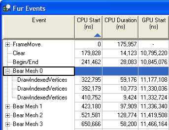
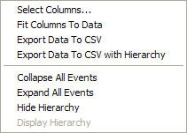

The Events window is the main window in PIX. It contains a columnar listing of the events that have been captured, along with analysis of that data.

Illustration PIX Events window with hierarchical events.
Each row in the table represents an event. A CPU-only event will contain values in the CPU Start and the CPU Duration columns. An event that also occurs on the GPU will have valid values in the GPU Start and the Duration columns. If no timing information is available, none of these four columns will contain data. The remaining columns are calculated by the PIX analysis application and will be empty if no analysis has been performed.
The Events window supports a hierarchical display of events. A title can specify user-defined events and markers using D3DPERF_BeginEvent, D3DPERF_EndEvent, and D3DPERF_SetMarker. These events are displayed in the tree view as above. By default, only top-level events are shown. Events that encompass other events and are collapsed are indicated with a "+". When they are collapsed, the displayed statistics summarize the encompassed events. Events that have been expanded are indicated with a "-". For a full description of each event, see PIX Timing Capture.
The first five columns are generated when recording timing data with PIX. Because the values are measured in real-time while the profiled title is running, they accurately reflect the true performance of the system at that time. This is in contrast with the other columns generated by recording push-buffer data and running analysis, eliminating factors such as memory bandwidth contention from sources other than the GPU.
The following table describes each of the columns:
| Column | Description |
|---|---|
| Event | Name of the Direct3D event that was captured. For a full description of each event, see PIX Timing Capture. |
| ID | ID associated with the event. |
| CPU Start | CPU time when the event started. |
| CPU Duration | Total time that the CPU spent processing the event. |
| GPU Start | Time at which the GPU started the rendered primitive. |
| GPU Duration | Total time that the GPU spent processing the rendered primitive. |
| % of Total Time | The percentage of the total frame time that the primitive (or group of primitives) takes, as calculated from back-end time. |
| Back-end Time | Total back-end time that the rendering primitive took, as measured at the Z-cull stage of the graphics hardware pipeline. A hardware back-end flush is done between primitives to measure each primitive independently from another. Because the flush eliminates overlaps in the pipeline between primitives, the sum of the back-end times may be more than the overall back-end render time. |
| Setup Time | Total time spent on the overhead of state changes done between the previous and current primitives. |
| Pre-Occlusion Cull Pixel Count | The number of pixels that would have been rendered if depth, stencil, and alpha comparison functions were D3DCMP_ALWAYS. When multisampling, this is the post-multisample-expansion count. |
| Post-Occlusion Cull Pixel Count | The number of pixels that are rendered, taking into account depth, stencil, and alpha occlusion. When multisampling, this is the post-multisample-expansion count. |
| Pixels Occlusion Culled | Percent of pixels that are occlusion culled. |
| Effective Fill Rate | Effective pixel fill rate, relative to the back-end time. |
| Ideal Fill Rate | The fill rate that is possible if all pixels are rendered, Z compression is perfect, there is no setup overhead, and there is no texture read overhead. This is measured using the current render state by drawing large quads to the current render target with the textures resized to be opaque and 1×1, and ensuring that the Z, stencil, and alpha tests pass. This can be thought of as measuring the pixel shader and color and Z bandwidth costs. |
| Vertex Count | Vertex count. |
| Transformed Vertex Count | Number of vertices that are transformed, taking into account the 24 vertex post-T&L cache. This number is in contrast to Vertex Count, which is the pre-transform-cache number. If the Transform Vertex Count is close to the Vertex Count, then the profiled title is not making good use of the vertex cache. |
| Stalled Vertex Count | Number of vertices that fall into the last six entries of the post-T&L cache. A cache hit to any of these last six entries can be worse than missing the post-T&L cache and requiring reshading. |
| Triangle Count | Triangle count. |
| Post-Backface Cull Nonempty Triangles | The number of triangles that cover at least one pixel, taking into account clipping and back-face culling. This is pre-Z-culling and counts triangles that are completely obscured due to Z. |
| Effective Triangle Rate | Effective triangle fill rate, relative to the back-end time. |
| Vertex Shader Cost | The exact GPU cycle cost of the current programmable or fixed-function vertex shader. |
| Back-end Time With 1-Pixel Textures | The same measurement as the back-end time, but done with all textures set to a 1×1 (or 1×1×1) texel size. |
| % Texture Bound | The percentage of the rendered primitive time that is attributable to texture fetches, as computed using the back-end times for 1×1 and normal-sized textures. |
| Back-end Time With 0-Pixel Viewport | The same measurement as the back-end time, but done with the viewport forced to a zero-pixel size. |
| % Fill Bound | Percentage of the rendered primitive time that is attributable to fills, as computed using the back-end times for zero-pixel and normal-sized viewports. |
| Z-Compressed Packets | The percentage of Z packets that are compressed after the primitive is rendered. Note that this is not the effective compression of the Z-buffer. (After a Z clear, the percentage of Z-compressed packets will be 100%, but the effective compression is 87.5% due to 8-to-1 compression.) |
| Push-buffer Inline Traffic | The number of bytes written into the push-buffer to handle the command for the primitive rendering. For DrawIndexedVertices, this is effectively the amount of index data that has to be copied to the push-buffer. |
| Push-buffer Setup Traffic | The number of bytes of state change commands in the push-buffer that preceded the rendered primitive. |
| Vertex-buffer Traffic | The amount of vertex-buffer data read by the GPU, taking into account the pre-transform cache. |
| Color-buffer Traffic Estimate | A rough estimate of the color render target bandwidth required, computed by multiplying the number of pixels rendered by the blend mode and color buffer format. |
| Average Triangle Size | Average triangle size, calculated from the number of pre-culled pixels and count of triangles. Note that entirely clipped triangles are considered to have a zero size. Both degenerate triangles and back-faced triangles are used to calculate this value. Note On a tri-strip of a solid object, half of the triangles will be back-faced cull and another 10–50% will be degenerate. Many degenerate triangles are inserted into tri-strips and then culled by the hardware. As a result, the average size of the triangles that make it to the back-end may be two to four times larger than the value displayed in this column. |
Each column can be sorted up or down by clicking one or more times on the header. Right-clicking on the header gives the choice of either fitting the column to the data, or graphing the data in the Timeline window. Each column can be resized by dragging the edge of the column header with the mouse.
Left-clicking on an event updates the Timeline window. Right-clicking on an event causes the context menu to pop up.

This gives the user the chance to resize the columns to fit the data, and then export the data to a Microsoft Excel .csv file. Users can choose which columns to display and the order of those columns. Additionally, the user can expand or collapse all events in a hierarchical view, hide the hierarchical view, or display the hierarchical view (if it was hidden).